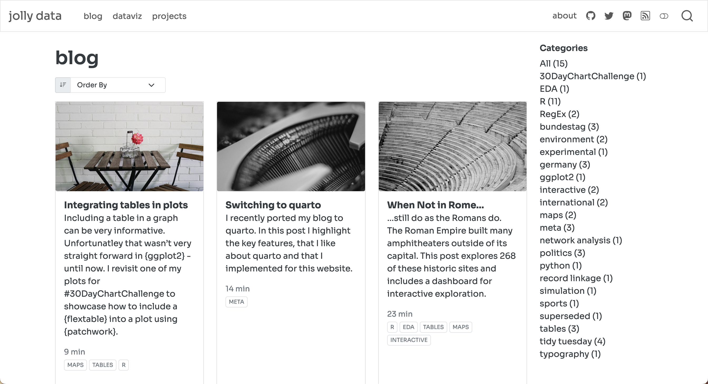
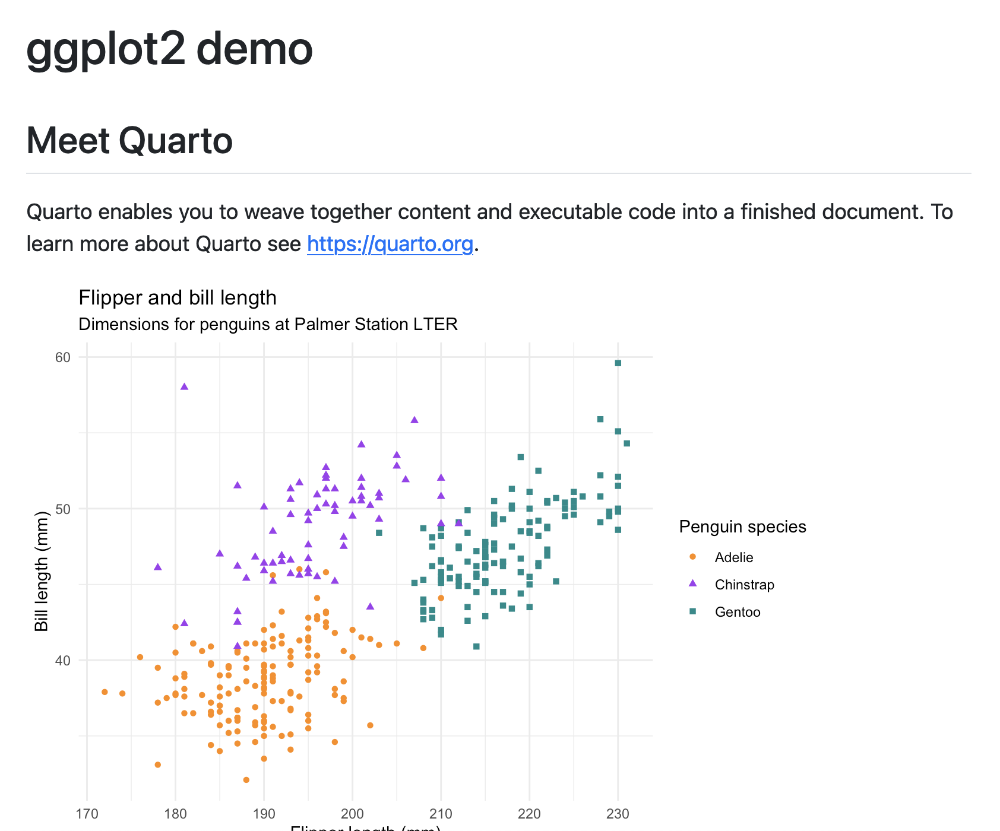
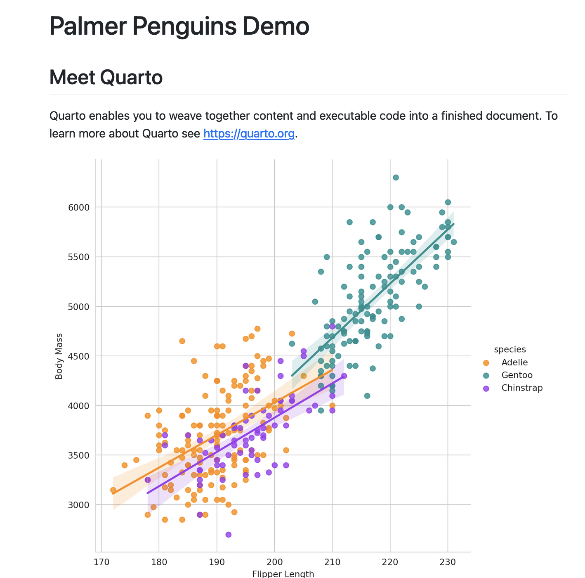
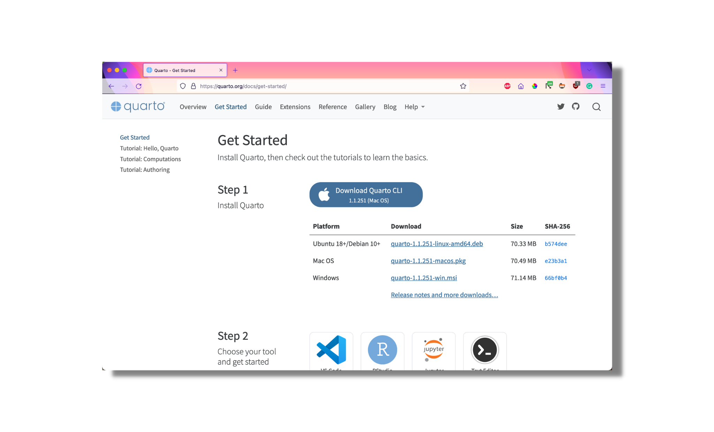
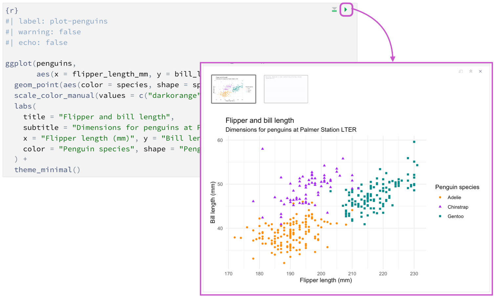
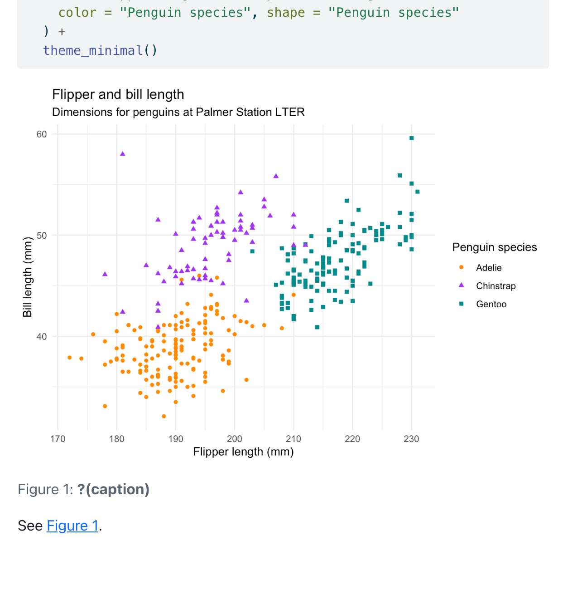
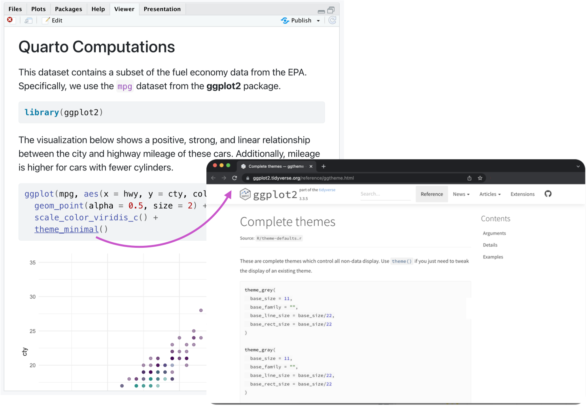
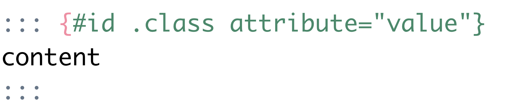
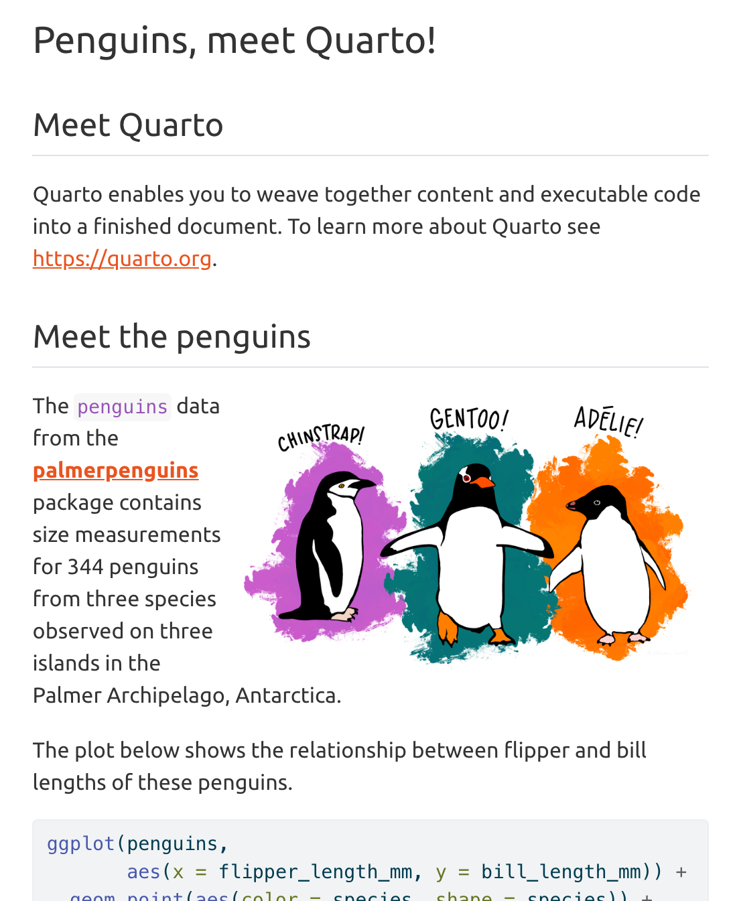

Code
```{mermaid}
%%| fig-width: 6
flowchart LR
A[1] --> B(2)
B --> C{3}
C --> D[4]
C --> E[5]
```
flowchart LR
A[1] --> B(2)
B --> C{3}
C --> D[4]
C --> E[5]
Intro to Quarto
Isabella Velásquez
R-Ladies St. Louis
Hi everybody! Thank you so much for joining today’s session. I am so excited to introduce Quarto and many thanks to Laura and the R-Ladies St. Louis co-organizers for having me today.
My name is Isabella Velásquez.
ivelasq3 | ivelasq | ivelasq | ivelasq.rbind.io
My name is Isabella Velásquez. I work at RStudio, soon to be Posit, and have been an R user for many years. I am a co-organizer for R-Ladies Seattle, as well. Just a bit about me, I am an avid hiker and love cats, especially my cat, Kitty. I am also a digital illustration beginner, as you will see in my presentation today.
To follow along with the exercises, please be sure that you:
You have a few options of how to attend this session. On the README file of the GitHub repo for this session is a list of instructions and a link to the exercise repo. One option is that you have a local copy of the exercises already, and when we get to the different sections you can follow along with what I am doing on your own RStudio. Another option is that you sign up for RStudio Cloud and go into the project to follow along. It is also linked in the instructions. One benefit of this is that you don’t have to have RStudio installed on your computer and the project is ready, the packages are installed for you, and you can save a copy of your work if you would like. But, please feel free to just watch the session and try things out on your own afterwards. The slides, repositories, and project will stay up so that you can try things out on your own time. One other thing to note is that Quarto has a lot of options for creating content, so I added some reference materials in the exercise repo README so that you can play around with other options other than the ones I show you.
Quarto® is an
open-source
scientific and technical
publishing system
built on Pandoc.
Quarto is an open-source scientific and technical publishing system built on Pandoc. Let’s break this down: Open-source: RStudio believes that it’s better for everyone if the tools used for research and science are free and open. Free software means more reproducibility, widespread sharing of knowledge and techniques, and elimination of cost barriers. You can also see the source code and contribute, too. Scientific and technical: Scientific and technical means that Quarto has specific things for journal articles or scientific papers, like support for code execution, citations, footnotes, scientific markdown, equations, citations, crossrefs, so many things. We’ll be showing some of these later on, but Quarto definitely has the scientific publishing audience in mind. Publishing system: Quarto is a tool for writing dynamic documents that combine code, output, and text. It can embed output from Python, R, Julia, and Observable. Quarto can be rendered to create high-quality articles, reports, presentations, websites, blogs, and books in HTML, PDF, MS Word, ePub, and more formats. Pandoc is the tool working behind the scenes to change Quarto documents to their finalized format.Quarto documents are authored with markdown, which is a plain text format. But Pandoc markdown is very rich and lets you control your document in very specific ways while being easy to read and write. We’ll cover this as well.
Can we reimplement R Markdown such that it’s not tied to R?
Check out JJ Allaire’s R Medicine Keynote!
R Markdown is a file format for making dynamic documents with R. However, you need to call it from R to use it, and it was depedentn on knitr. If you’re a Python user, it means you need to install R to use R Markdown. Quarto is a tool that you can call from the terminal or command line, and is independent from the computational systems. Quarto supports knitr, and can support others. So, you can think of Quarto as the next generation R Markdown that is fundamentally multilanguage and multiengine.
Check out JJ Allaire’s R Medicine Keynote!
So the goals are to create these dynamic documents that can be reproducible and automated. [story about building documents]. For single-source publishing, you often need to create all sorts of output, like things that are printed, on the web, on the mobile. The idea is to being able to make publications from one source.

Check out JJ Allaire’s R Medicine Keynote!
Quarto sits inside the big and broad literate programming world, which mixes narrative in text form with code for formatted outputs like documents and webpages and more. [click] There are lots of literate programming systems that support computation, like R Markdown, Org Mode, Jupyter Book, and now there is Quarto!
Let’s bring R Markdown to everybody!
So, if there already exist literate programming tools out there, why create a new one, especially since RStudio is also behind R Markdown? Like mentioned earlier, Quarto was built from the start to support multiple computational systems and ecosystems. This new system brings R Markdown to everybody.
“Quarto is the format of a book or
pamphlet produced from full sheets
printed with eight pages of text, four to a
side, then folded twice to produce four leaves.”
— Wikipedia
Image based on one from gutenberg.org
According to the website, the developers wanted to use a name that had meaning in the history of publishing and ulitimately landed on Quarto. A quarto is an 8-page double-sided booklet, made by folding a single sheet of paper into four sections.





Quarto can make very flexible websites, or books which are a a Quarto website that can be rendered to Word, ePub, etc., blogs with listings and posts and RSS feeds, Quarto has deep feature set for presentations with reveal.js optimized for scientific content, and of course, publishing for journals. There is custom format systems and the ability to flexibly adapt LaTeX templates.
An engine is the tool that runs code. This is the underlying structure that creates documents from the source, the Quarto markdown file or the QMD file. When we render a Quarto document, first, the knitr engine executes all of the code chunks and generates an intermediary markdown file that includes both the code and code output. Then that markdown file is processed by pandoc to create the finished document. Since Quarto uses knitr, most Rmd files can be used unmodified.
---
title: "ggplot2 demo"
format:
html:
code-fold: true
---
## Meet Quarto
Quarto enables you to weave together content and executable code into a finished document. To learn more about Quarto see <https://quarto.org>.
```{r}
#| label: plot-penguins
#| echo: false
#| message: false
#| warning: false
library(tidyverse)
library(palmerpenguins)
ggplot(penguins,
aes(x = flipper_length_mm, y = bill_length_mm)) +
geom_point(aes(color = species, shape = species)) +
scale_color_manual(values = c("darkorange","purple","cyan4")) +
labs(
title = "Flipper and bill length",
subtitle = "Dimensions for penguins at Palmer Station LTER",
x = "Flipper length (mm)", y = "Bill length (mm)",
color = "Penguin species", shape = "Penguin species"
) +
theme_minimal()
```
This is a Quarto document with the extension .qmd (on the left) along with its rendered version as HTML (on the right). You could also choose to render it into other formats like PDF, MS Word, etc. This is the basic model for Quarto publishing—take a source document and render it to a variety of output formats.
The structure is similar for Jupyter, we just are running documents natively through the Jupyter engine. Like R Marukdown, you can render Jupyter notebooks with Quarto, too. Jupyter will support any other language that has a Jupyter kernal, and right now, there’s a lot of Quarto functionality for Python and Julia through Jupyter. But, this is part of the multilingualism that we discussed earlier, where you can keep adding languages if you swap out different engines. This also means you can have a shared syntax and format across languages, since the backend is the same.
---
title: "Palmer Penguins Demo"
format:
html:
code-fold: true
jupyter: python3
---
## Meet Quarto
Quarto enables you to weave together content and executable code into a finished document. To learn more about Quarto see <https://quarto.org>.
```{python}
#| echo: false
#| message: false
import pandas as pd
import seaborn as sns
from palmerpenguins import load_penguins
sns.set_style('whitegrid')
penguins = load_penguins()
g = sns.lmplot(x="flipper_length_mm",
y="body_mass_g",
hue="species",
height=7,
data=penguins,
palette=['#FF8C00','#159090','#A034F0']);
g.set_xlabels('Flipper Length');
g.set_ylabels('Body Mass');
```
Quarto has native support for Observable JS, a set of enhancements to vanilla JS. It has reactive runtime, so you can interactively work with data within your Quarto document. There are other options too, like htmlwidgets and Shiny for Python.

So this is all good and well, but you may be wondering should you switch to Quarto if you already have another tool that you really like, you may be wondering whether or not you should switch. Here are some considerations. Quarto has a shared expression for core features. If you used the packages from the R Markdown ecosystem, then you may have had to switch between different ways of doing the same thing. In Quarto, you have a shared core syntax that is the same across all formats. Things like tabset, code folding, cross references in the same way. Another example is that Quarto has a universal theming system based on SCSS for all HTML output where core variables defined by bslib and so it is compatible with Shiny, flexdashboard, and R Markdown themes. So, users can create very consistent and organized theming across content.
R Markdown isn’t going away but big new features will be in Quarto, things like YAML intelligence, figure panels, layouts, which we’ll cover later in the session.


Quarto also supports extensions. Quarto extensions are written in Lua, meaning that they are not language specific. So, you can use the same extension in a Jupyter file or a knitr file. Shortcodes let you add content, like fontawesome icons that you have seen in this presentation, or videos from YouTube. Filters let you add new markdown syntax for extended features. And formats are custom formats. There are built in extensions and then community built ones, if you search for Awesome Quarto, there are a list of them there.

quarto.org
When you download the Quarto CLI, though, that’s all you need to run Quarto, so you can use just your Terminal or Command Line Interface for everything that we’ll explore, but you will need to install the engines if you’re going to run code with the CLI.


Terminal
quarto renderPart of the multilingualism of Quarto is that you are not tied to one tool. Quarto is meant for collaboration either within data science teams or across data science teams. So if someone is familiar with Jupyter Lab, but someone else likes to work in RStudio, they can still work on the same Quarto documents without having to switch to one tool or the other.
For RStudio users, Quarto is bundled and preinstalled with v2022.07 and later. There are a lot of features that are built into RStudio for Quarto documents. We didn’t want to limit Quarto enhancements to just RStudio. VS Code has an extension so you can YAML completion and linting and other features for writing Quarto documents, and you can preview documents in Jupyter Notebooks and Jupyter Labs.
Use the Render button ( ) in the RStudio IDE to render the file and preview the output with a single click or keyboard shortcut (⇧⌘K).
) in the RStudio IDE to render the file and preview the output with a single click or keyboard shortcut (⇧⌘K).

Automatically render on save by checking the Render on Save option:

In RStudio, you can use the Render button to render the file, or take it through that process of convering to markdown, pandoc processing, etc. and preview the output with a single click. If you’re familiar with R Markdown, it is where the knit button would show for those document. If you prefer to automatically render whenever you save, you can check the Render on Save option on the editor toolbar. The preview will update whenever you re-render the document. Side-by-side preview works for both HTML and PDF outputs.
YAML code completion is available for project files, YAML front matter, and executable cell options:

If you have incorrect YAML it will also be highlighted when documents are saved:

Let’s try it!
Quarto has YAML intelligence in RStudio and VS code. YAML intelligence means completion and diagnostics for errors, and its’ available for project files, YAML front matter, and executable cell options. This makes it easy to write YAML and see what has gone wrong rather than getting error messages that are really hard to decipher.

Let’s try it!
RStudio has two options for editing documents: visual (on the left) and source (on the right). RStudio’s visual editor offers an WYSIWYM authoring experience for markdown. So formatting (e.g. bolding text) you can use the toolbar, a keyboard shortcut (⌘B), or the markdown construct (bold). The plain text source code underlying the document is written for you and you can view/edit it at any point by switching to source mode for editing. You can toggle back and forth these two modes by clicking on Source and Visual in the editor toolbar (or using the keyboard shortcut ⌘⇧ F4).


A Quarto document contains three types of content: a YAML header, code chunks, and markdown text.
---) on either endkey: valueQuarto documents usually start with an (optional) YAML header demarcated by three dashes on either end. The basic syntax of YAML uses key-value pairs in the format key: value. It controls the output of the document and contain metadata for your document, like title and author.
---
title: "Penguins, meet Quarto!"
format: html
editor: visual
---Other YAML fields commonly found in headers of documents include metadata like author, subtitle, date as well as customization options like theme, fontcolor, fig-width, etc.
---
title: "Penguins, meet Quarto!"
subtitle: "Intro to Quarto Exercise"
format: html
editor: visual
---Let’s try it!
{}#| at the beginning of the lineCode chunks are identified with three backticks, the language in curly brackets, and can have optional chunk options identified by the hashpipe at the beginning of the line within the chunk.
```{r, label="plot-penguins", warning=FALSE, echo=FALSE}
ggplot(penguins,
aes(x = flipper_length_mm, y = bill_length_mm)) +
geom_point(aes(color = species, shape = species)) +
scale_color_manual(values = c("darkorange","purple","cyan4")) +
labs(
title = "Flipper and bill length",
subtitle = "Dimensions for penguins at Palmer Station LTER",
x = "Flipper length (mm)", y = "Bill length (mm)",
color = "Penguin species", shape = "Penguin species"
) +
theme_minimal()
``````{r}
#| label: plot-penguins
#| warning: false
#| echo: false
ggplot(penguins,
aes(x = flipper_length_mm, y = bill_length_mm)) +
geom_point(aes(color = species, shape = species)) +
scale_color_manual(values = c("darkorange","purple","cyan4")) +
labs(
title = "Flipper and bill length",
subtitle = "Dimensions for penguins at Palmer Station LTER",
x = "Flipper length (mm)", y = "Bill length (mm)",
color = "Penguin species", shape = "Penguin species"
) +
theme_minimal()
``````{r}
#| label: plot-penguins
#| warning: false
#| echo: false
#| fig.alt: "Scatterplot with flipper length in millimeters on
#| the x-axis, bill length in millimeters on the y-axis, colored
#| by species, showing a slightly positive relationship with
#| Chinstrap penguins having higher bill length but lower body
#| mass, Adelie with low bill length and low body mass, and
#| Gentoo with high body mass and high bill length."
ggplot(penguins,
aes(x = flipper_length_mm, y = bill_length_mm)) +
geom_point(aes(color = species, shape = species)) +
scale_color_manual(values = c("darkorange","purple","cyan4")) +
labs(
title = "Flipper and bill length",
subtitle = "Dimensions for penguins at Palmer Station LTER",
x = "Flipper length (mm)", y = "Bill length (mm)",
color = "Penguin species", shape = "Penguin species"
) +
theme_minimal()
```The new hashpipe allows for consistency across Jupyter and knitr.

Let’s try it!
In addition to rendering the complete document to view the results of code chunks you can also run each code chunk interactively in the RStudio editor by clicking the icon or keyboard shortcut (⇧⌘⏎). RStudio executes the code and displays the results either inline within your file or in the Console, depending on your preference.
```{r}
#| label: fig-penguins
#| warning: false
ggplot(penguins,
aes(x = flipper_length_mm, y = bill_length_mm)) +
geom_point(aes(color = species, shape = species)) +
scale_color_manual(values = c("darkorange", "purple", "cyan4")) +
labs(
title = "Flipper and bill length",
subtitle = "Dimensions for penguins at Palmer Station LTER",
x = "Flipper length (mm)",
y = "Bill length (mm)",
color = "Penguin species",
shape = "Penguin species"
) +
theme_minimal()
```See @fig-penguins.
Put two plots side by side:
```{r}
#| layout-ncol: 2
#| warning: false
ggplot(penguins,
aes(x = flipper_length_mm, y = bill_length_mm)) +
geom_point(aes(color = species, shape = species))
ggplot(data = penguins, aes(x = flipper_length_mm)) +
geom_histogram(aes(fill = species),
alpha = 0.5,
position = "identity")
```Let’s add another plot to our chunk. Our goal is to display these plots side-by-side.
Put two plots side by side:

Put two plots side by side:
```{r}
#| layout: "[[30, 70]]"
#| warning: false
ggplot(penguins,
aes(x = flipper_length_mm, y = bill_length_mm)) +
geom_point(aes(color = species, shape = species))
ggplot(data = penguins, aes(x = flipper_length_mm)) +
geom_histogram(aes(fill = species),
alpha = 0.5,
position = "identity")
```Use the YAML to control options for all code chunks.
Hide all of the code and just show the output by specifying echo: false within the execute option in the YAML.
```{r}
#| label: plot-penguins
#| echo: false
ggplot(penguins,
aes(x = flipper_length_mm, y = bill_length_mm)) +
geom_point(aes(color = species, shape = species)) +
scale_color_manual(values = c("darkorange","purple","cyan4")) +
labs(
title = "Flipper and bill length",
subtitle = "Dimensions for penguins at Palmer Station LTER",
x = "Flipper length (mm)", y = "Bill length (mm)",
color = "Penguin species", shape = "Penguin species"
) +
theme_minimal()
``````{yaml}
---
title: "Hello, Quarto!"
format: html
editor: visual
execute:
echo: false
---
``````{yaml}
---
title: "Hello, Quarto!"
format:
html:
code-fold: true
---
``````{yaml}
---
title: "Hello, Quarto!"
format:
html:
code-tools:
source: https://quarto.org
---
```Needs downlit package
```{yaml}
---
title: "Hello, Quarto!"
format:
html:
code-link: true
---
```
You might want to fold it and allow readers to view it at their discretion. You can do this via the code-fold option. Remove the echo option we previously added and add the code-fold HTML format option.
Markdown is a lightweight markup language for creating formatted text using a plain-text editor. Quarto uses markdown syntax for text.
The `penguins` data from the [**palmerpenguins**](https://allisonhorst.github.io/palmerpenguins "palmerpenguins R package") package contains size measurements for `r nrow(penguins)` penguins from three species observed on three islands in the Palmer Archipelago, Antarctica.
The penguins data from the palmerpenguins package contains size measurements for 344 penguins from three species observed on three islands in the Palmer Archipelago, Antarctica.
If using the visual editor, you won’t need to learn much markdown syntax for authoring your document as you can use the menus and shortcuts to add a header, bold text, insert a table, etc. If using the source editor, you can achieve these with markdown expressions like ##, bold, etc.
| Markdown Syntax | Output |
|---|---|
|
italics and bold |
|
superscript2 / subscript2 |
|
|
|
verbatim code |
| Markdown Syntax | Output |
|---|---|
|
https://quarto.org |
|
Quarto |
|
Photo by Cornelius Ventures on Unsplash
```{markdown}
| Right | Left | Default | Center |
|------:|:-----|---------|:------:|
| 12 | 12 | 12 | 12 |
| 123 | 123 | 123 | 123 |
| 1 | 1 | 1 | 1 |
```| Right | Left | Default | Center |
|---|---|---|---|
| 12 | 12 | 12 | 12 |
| 123 | 123 | 123 | 123 |
| 1 | 1 | 1 | 1 |
```{markdown}
| Right | Left | Default | Center |
|------:|:-----|---------|:------:|
| 12 | 12 | 12 | 12 |
| 123 | 123 | 123 | 123 |
| 1 | 1 | 1 | 1 |
: Table Column Widths {tbl-colwidths="[10,30,30,30]"}
```| Right | Left | Default | Center |
|---|---|---|---|
| 12 | 12 | 12 | 12 |
| 123 | 123 | 123 | 123 |
| 1 | 1 | 1 | 1 |
Let’s try it!
You can add classes, attributes, and other identifiers to content using Divs and Spans.
::: {.border}
This content can be styled with a border
:::[This is *some text*]{.class key="val"}
::: - Div start and end#id - label.class - behaviorattribute=value - customization:::{.callout-tip}
Note that there are five types of callouts, including:
`note`, `tip`, `warning`, `caution`, and `important`.
:::Note that there are five types of callouts, including: note, tip, warning, caution, and important.
Pandoc and therefore Quarto can parse fenced Div blocks, which lets you modify the structure of your documents. You can add classes, attributes, and other identifiers to regions of content using Divs and Spans. You can think of divs as HTML divs but can be applied in PDFs or other formats like Word. Here is an example of a call out, which calls out special content for readers and you may have seen them in books or papers. Quarto has this for all different formats using Divs.
::: {#call1 .callout-note appearance="simple"}
## Pay Attention
Using callouts is an effective way to highlight content that your reader give special consideration or attention.
:::Using callouts is an effective way to highlight content that your reader give special consideration or attention.
.callout-warning
.callout-caution
.callout-important
```{markdown}
::: {layout-ncol=2}

Photo by <a href="https://unsplash.com/@corneliusventures?utm_source=unsplash&utm_medium=referral&utm_content=creditCopyText">Cornelius Ventures</a> on <a href="https://unsplash.com/s/photos/penguin?utm_source=unsplash&utm_medium=referral&utm_content=creditCopyText">Unsplash</a>
:::
```Photo by Cornelius Ventures on Unsplash
```{markdown}
::: {layout="[[1,1], [1]]"}


:::
``````{markdown}
::: {layout="[[70,30], [100]]"}


:::
``````{markdown}
::: {.panel-tabset group="language"}
## R
`library(dplyr)`
## Python
`import pandas as pd`
:::
```library(dplyr)
import pandas as pd
[] and {} for span start and end.class - behaviorkey="val" - customizationYou can also apply styles to inline text by creating spans. Use square brackets to surround the text and curly bracketes for the style you would like.
```{markdown}
This is text that is [red]{style="color:red;"}.
```This is text that is red.
```{markdown}
{fig-alt="A photo of a penguin jumping"}
``````{markdown}
{fig-alt="A photo of a penguin jumping" width=100}
```You can create Revealjs presentations using the revealjs format.
```{yaml}
---
title: "Penguins, meet Quarto!"
format: revealjs
editor: visual
---
```Let’s try it!
```{r}
#| echo: true
#| eval: FALSE
#| code-line-numbers: 3-4
ggplot(penguins,
aes(x = flipper_length_mm, y = bill_length_mm)) +
geom_point(aes(color = species, shape = species)) +
scale_color_manual(values = c("darkorange","purple","cyan4"))
```Most of the core capabilities of Quarto HTML Code Blocks are available for Reveal slides, including code folding, code copy, and the ability to pick a custom syntax highlighting theme. Revealjs also has some functionality not available in documents, such as code-line-highlighting, which lets you highlight specific lines of code output or highlight distinct lines over a progression of steps.
```{markdown}
::: {.incremental}
- Adelie
- Chinstrap
- Gentoo
:::
```By default number and bullet lists within slides are displayed all at once. You can override this globally using the incremental option.
To create a new document in RStudio, go to File > New File > Quarto Document:
A new document will be created with the following YAML. This document will be empty so it won’t be terribly interesting.
Quarto projects are directories that provide:
quarto render myproject).```{yaml}
project:
output-dir: _output
toc: true
number-sections: true
bibliography: references.bib
format:
html:
css: styles.css
html-math-method: katex
pdf:
documentclass: report
margin-left: 30mm
margin-right: 30mm
```Within a Quarto project, you can render all the files at once or specify specific ones to render. So, say you have a website and you want to change the theme throughout, rather than rendering individual pages you can do that all with one command in a project. Quarto projects also include a _quarto.yml configuration file so that every document in the project inherits the metadata in that file. So, if you think about a blog, you probably want all your posts to have the same theme. If you use the Quarto command for making a new blog, it will automatically be a project, and you can configure the theme for all pages in the _quarto.yml file.
```{yaml}
execute:
freeze: true # never re-render during project render
``````{yaml}
execute:
freeze: auto # re-render only when source changes
```Rendering a bunch of files can be quite time consuming depending on the computations required. The freeze option specifies if computational documents should never be re-rendered during a global project render, or only be re-rendered when their source file changes. Freeze can used when you have either a large number of collaborators or many computational documents created over a long period of time. In these cases, it can be challenging to fully re-execute every document when you render the site. This could be because some documents have environment-specific requirements or one of your teammates wrote something in Python, which you don’t have installed. Using freeze ensures that you can always reproducibly render your site.
Quarto includes 25 themes from the Bootswatch project:
Use these themes under the theme option in the YAML:
```{yaml}
format:
html:
theme: flatly
```
You can do extensive additional customization using SASS theme files.
```{css}
/*-- scss:defaults --*/
$body-bg: #CDEEFD;
/*-- scss:rules --*/
h1, h2, h3, h4, h5, h6 {
text-shadow: -1px -1px 0 rgba(0, 0, 0, .3);
}
```Provide the custom theme under theme:
```{yaml}
theme:
- flatly
- custom.scss
```Quarto also allows you to use a dark and light theme.
```{yaml}
theme:
light: flatly
dark: darkly
```Since content rendered with Quarto uses standard formats (HTML, PDFs, MS Word, etc.) it can be published anywhere.
Some options:
There’s an integrated quarto publish command that lets you publish in a bunch of places.
Quarto Pub is a free publishing service for content created with Quarto.
Terminal
quarto publish quarto-pub hello.qmdTerminal
# token created at https://quartopub.com/profile/
export QUARTO_PUB_AUTH_TOKEN="qpa_k4yWKEmlu5wkvx173Ls"
# publish to quarto-pub site specified within _publish.yml
quarto publish quarto-pubLet’s try it!
I hope that you enjoyed this intro to Quarto!
Source: xvzf on YouTube